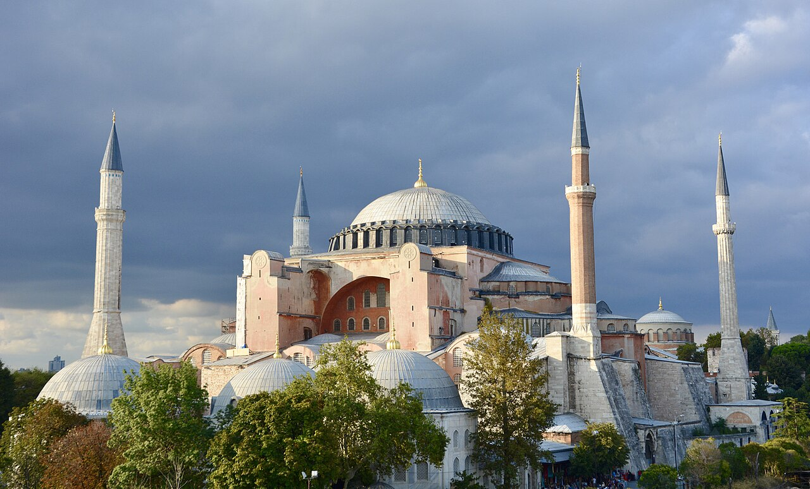
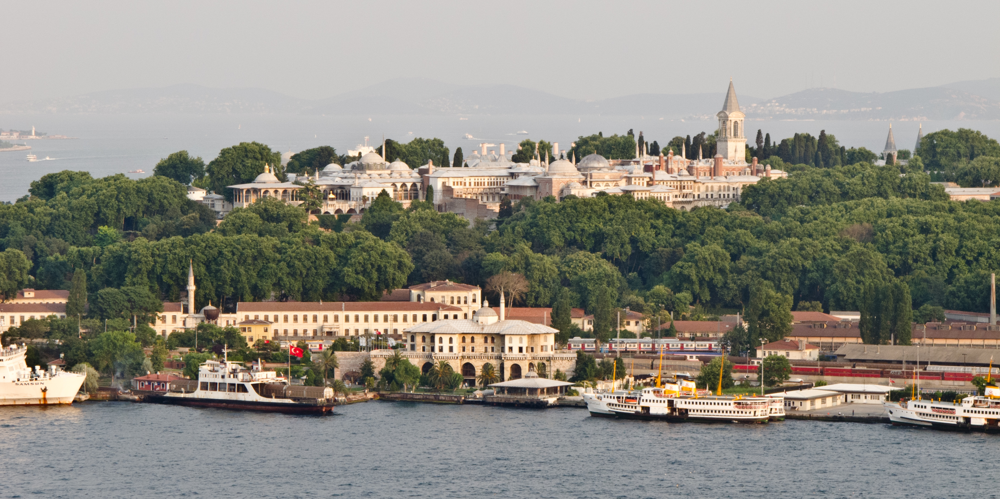
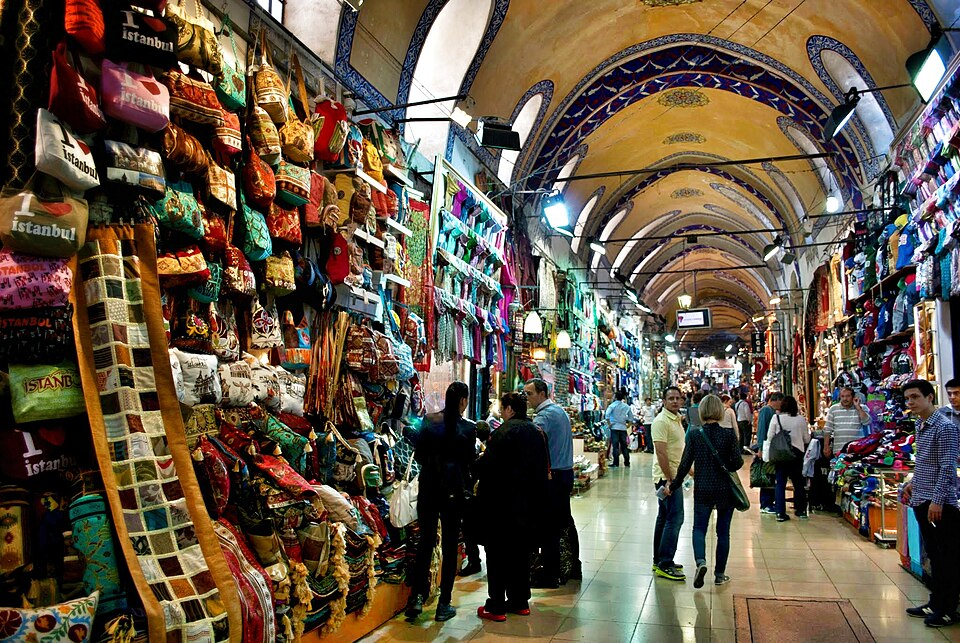
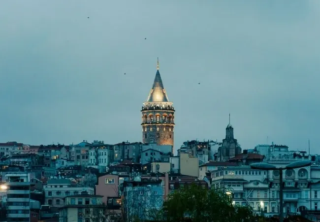

Blaue Moschee
Die Sultan-Ahmed-Moschee gegenüber der Hagia Sophia ist bekannt für ihre sechs Minarette und die blauen Fliesen im Inneren.
Istanbul hat unzählige Sehenswürdigkeiten. Hier sind fünf, die man bei einem Besuch nicht verpassen sollte.

Sie wurde im 6. Jahrhundert als Kirche erbaut, war später eine Moschee und ist heute wieder ein Ort des Gebets. Berühmt ist die riesige Kuppel.
Die Sultan-Ahmed-Moschee gegenüber der Hagia Sophia ist bekannt für ihre sechs Minarette und die blauen Fliesen im Inneren.

Jahrhundertelang wohnten hier die osmanischen Sultane. Heute kann man Höfe, Schatzkammer und den Blick auf den Bosporus besichtigen.

Einer der größten überdachten Märkte der Welt mit tausenden Läden für Teppiche, Schmuck, Gewürze und Souvenirs.

Vom Turm aus hat man einen weiten Blick über die Altstadt, das Goldene Horn und den Bosporus.